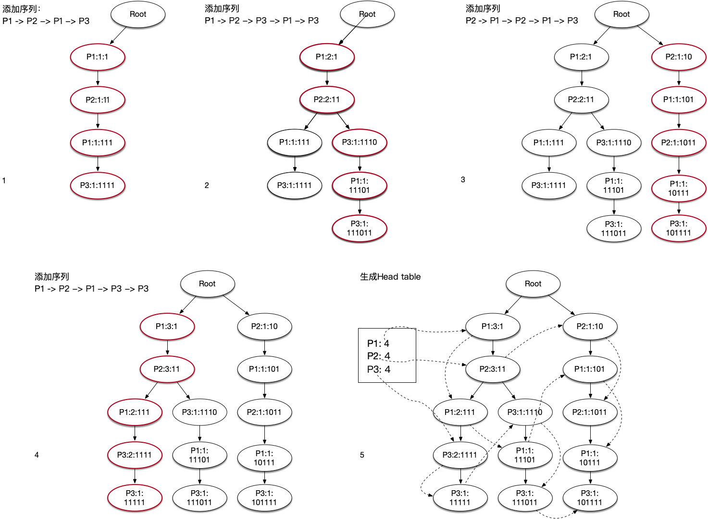
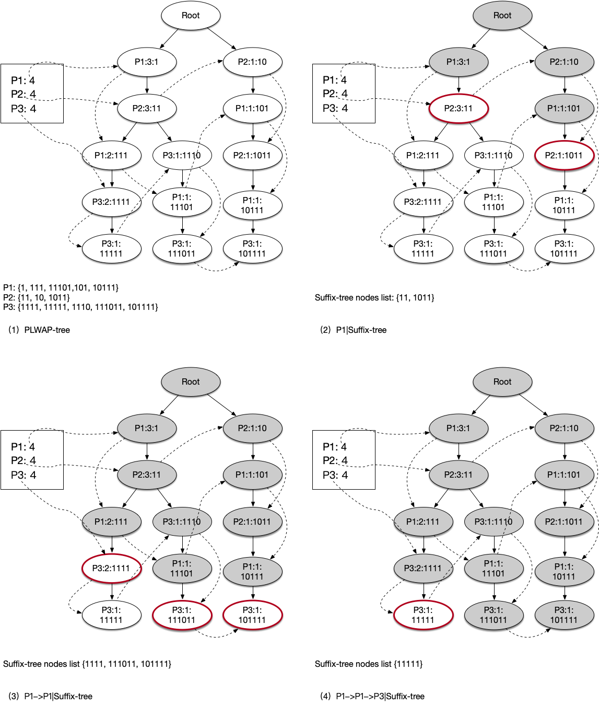

序列模式由关联规则发展而来，都属于频繁模式挖掘算法，其核心思想为：“频繁序列的非空子序列一定是频繁的”。
频繁序列挖掘也称频繁序列模式，是频繁模式挖掘中针对序列挖掘的分支。频繁序列模式挖掘分为候选集生成算法与无候选集生成算法两种。典型的有候选集生成算法有Apriori算法与GSP算法。无候选集产生算法主要有PrefixSpan算法与WAP算法。
有候选集生成的频繁序列挖掘算法也称为Apriori-like算法，此类算法以Apriori为基础，主要有连接和剪枝两个操作。但是Apriori-like算法存在两个严重缺陷:
WAP（Web Access Pattern，Web访问模式算法）由Jian Pei与Jiawei Han等人提出。WAP算法首先扫描WASD数据库中所有的1阶频繁项，再在1阶频繁项的基础上，再次扫描WASD数据库并构建WAP树，最后使用条件搜索递归地挖掘频繁序列。其中关键操作为构建WAP树和使用WAP树进行数据挖掘：
构建WAP树
WAP树频繁模式挖掘
尽管WAP算法只需要扫描两次数据库，且避免了大量候选序列的产生，比Apriori-like算法更加高效。但是它在递归过程中的会生成大量的条件WAP树，而构建这些条件WAP树所需的额外的开销会导致算法性能下降。
针对WAP需要递归构建条件WAP树的问题，Ezeife和Lu提出了PLWAP算法。不同于WAP算法，PLWAP（Pre-Order Linked WAP-tree）算法采用先序遍历对每个节点进行二进制位置编码以用于快速确定节点间的父子关系，因此不需要递归地创建条件WAP树。
二进制位置编码（binary position code）
给定一个PLWAP树，每个节点的位置编码（position code）遵循以下规则：
PLWAP算法步骤
PLWAP构造过程
输入：访问日志数据库(WASD)，频繁1阶序列L_1
输出：链头表 Head Table与PLWAP-tree
1）设当前节点为 R(label=Null,position code=Null,count=0)
For each 序列 S∈WASD
提取序列S中所有频繁子序列FE
For each event e_i∈FE
If 当前节点有子节点
If e_i∈ 子节点
子节点计数+1
Else
将e_i作为新节点插入支持度计数为1
位置编码为最左侧子节点编码+“0”
Else
将e_i作为新节点插入支持度计数为1
位置编码为最左侧子节点编码+“1”
2）从根节点开始，对PLWAP树作先序遍历，获得Head table
3）返回Head table与PLWAP树PLWAP挖掘过程
输入：PLWAP-tree T，Head linkage table L
最小支持度，后缀树节点列表（初始值包括根节点）R，频繁序列集合F
输出：频繁序列集合F^'
其他变量：S存储当前节点，C存储e_i 的支持度计数
1) If R为空，return
2) For each e_i∈L.找到找到e_i 的后缀树
令S为e_i-queue的第一个节点
遍历e_i-queue
If e_i 为R中任意项的子孙节点且不为S的子孙节点
令e_i 加入后缀树R得到R^'
C=C+e_i.count
令S=e_i
If C≥最小支持度
将e_i 拼接上F得到F^'
递归调用PLWAP-Mine算法,入参为R^' 和F^'| 事务（会话）ID | 会话访问序列 |
|---|---|
| 1 | P1→P2→P1→P3 |
| 2 | P1→P2→P3→P1→P3 |
| 3 | P2→P1→P2→P1→P3 |
| 4 | P1→P2→P1→P3→P3 |


#! /usr/bin/env python3
# Author: Fengfan Hu
# Date: 2021.06.26
class Node:
'''
Node 类型
@param url 节点Url - .i.e event in sequential mining.
@param code 节点编码
@param count 节点频数
@param children 子节点列表
'''
def __init__(self, url: str, children, code, count: int = 1):
self.url = url;
self.count = count;
self.code = code;
self.children = children;
def isDescendantOf(self, x):
return self.code[1][:x.code[0]+1] == x.code[1]+'1';
def isDescendantOfR(self, R):
for event in R:
code = event.code;
if (self.code[1][:code[0]+1] == code[1]+'1' or self.code[1][:code[0]] == code[1]): return True;
return False;
class PLWAP:
def __init__(self, sequences):
self.root = Node('root', {}, None);
self.linked_head = {};
self.sequences = sequences;
self.F = [];
# Init linked header
self.initLinkedHeader();
self.createWAPTree();
self.getPreOrderedLink();
# Init linked header
def initLinkedHeader(self):
uniqueUrl = set();
for session in self.sequences:
uniqueUrl = uniqueUrl.union(set(session));
for url in uniqueUrl:
self.linked_head[url] = [];
# WAP-Tree
def createWAPTree(self):
for sequence in self.sequences:
currentNode = self.root;
for event in sequence:
if (event not in currentNode.children):
# root case
if (currentNode.code == None):
if (not currentNode.children):
# first non-root node
code = (1, '1');
else:
keys = currentNode.children.keys();
code_val = currentNode.children[list(keys)[0]].code[1] + len(keys)*'0';
code = (len(code_val), code_val);
else:
if (not currentNode.children):
code_val = currentNode.code[1] + '1';
code = (len(code_val), code_val);
else:
keys = currentNode.children.keys();
code_val = currentNode.children[list(keys)[0]].code[1] + len(keys)*'0';
code = (len(code_val), code_val);
newNode = Node(event, {}, code);
currentNode.children[event] = newNode;
else:
currentNode.children[event].count += 1;
newNode = currentNode.children[event];
currentNode = newNode;
# Get Pre-ordered header linkage
def getPreOrderedLink(self):
root = self.root;
linked_head = self.linked_head;
if root is None:
return []
stack = [root, ]
while stack:
root = stack.pop()
if (root.url != 'root'): # root Node need not add in
linked_head[root.url].append(root);
stack.extend(list(root.children.values())[::-1])
def PLWAP_Mine(self, minimum_support, header_linkage = None, frequent_sequence = None, suffix_tree_roots = None):
# Initialization
if (not header_linkage):
header_linkage = self.linked_head;
if (not frequent_sequence):
frequent_sequence = [];
if (not suffix_tree_roots):
suffix_tree_roots = list(self.root.children.values());
# 1. If R is empty, return
if (not suffix_tree_roots): return;
# 2. For each event, e_i in header_linkage, find the suffix tree of e_i in wap_tree, do
for event in list(header_linkage.keys()):
e_i_queue = header_linkage[event];
# 2a. Save first event in e_i-queue to S
S = e_i_queue[0];
# 2b. Following the e_i-queue
R_bar = [];
C = 0;
for idx, e_i in enumerate(e_i_queue):
# If event e_i is the descendant of any event in R, and is not descendant of S
if (e_i.isDescendantOfR(suffix_tree_roots)):
if (not e_i.isDescendantOf(S)):
# Insert it into suffix-tree-header set R'
R_bar.extend(list(e_i.children.values()));
# Add count of e_i to C
C += e_i.count;
# Replace the S with e_i
S = e_i;
else:
if (idx+1 < len(e_i_queue)):
S = e_i_queue[idx+1];
# 2c. If C is greater than minimum_support
if (C >= minimum_support):
# Append e_i after F to F' and output F'
frequent_sequence_bar = frequent_sequence[:];
frequent_sequence_bar.append(event);
self.F.append({'+'.join(frequent_sequence_bar): C});
print({'+'.join(frequent_sequence_bar): C});
# Call Algorithm PLWAP-MINE by passing R_bar and F_bar
self.PLWAP_Mine(minimum_support, None, frequent_sequence_bar, R_bar);
if __name__ == "__main__":
testSessions = [];
testSessions.append(['a', 'b', 'a', 'c']);
testSessions.append(['a', 'b', 'c', 'a', 'c']);
testSessions.append(['b', 'a', 'b', 'a', 'c']);
testSessions.append(['a', 'b', 'a', 'c', 'c']);
plwap = PLWAP(testSessions);
plwap.PLWAP_Mine(3);
print(plwap.F)本文由 Frank采用 署名 4.0 国际 (CC BY 4.0)许可
Made with ❤ and at Hangzhou.